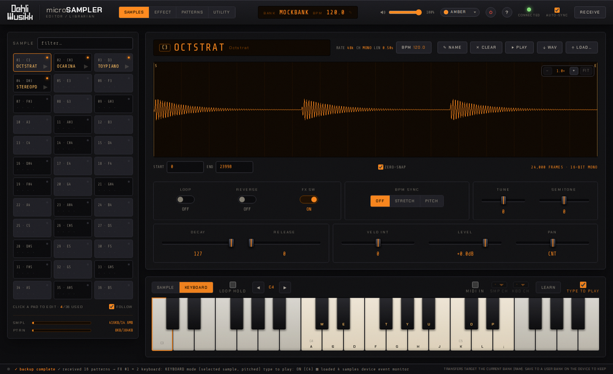
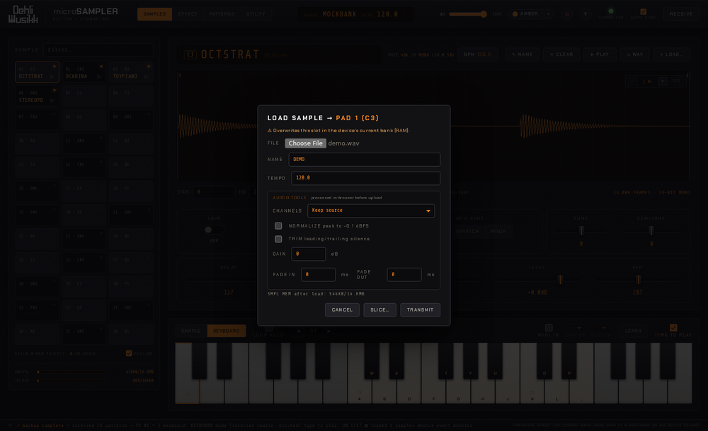
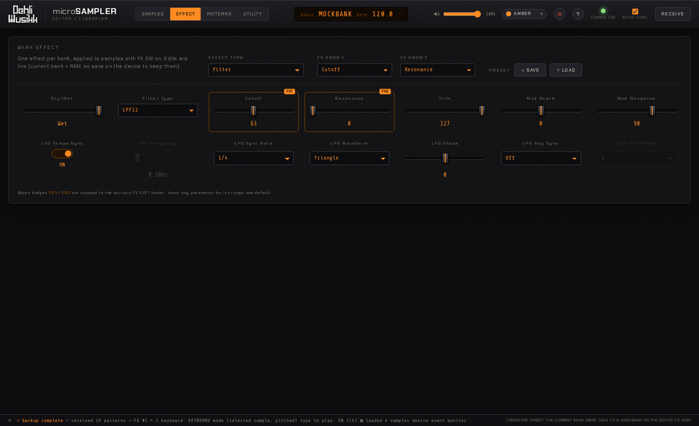
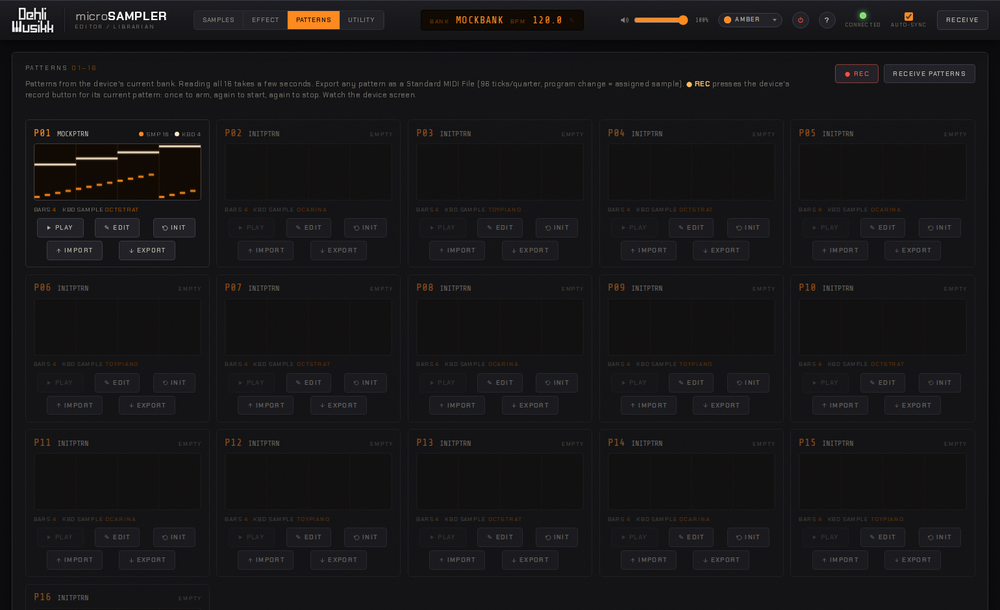
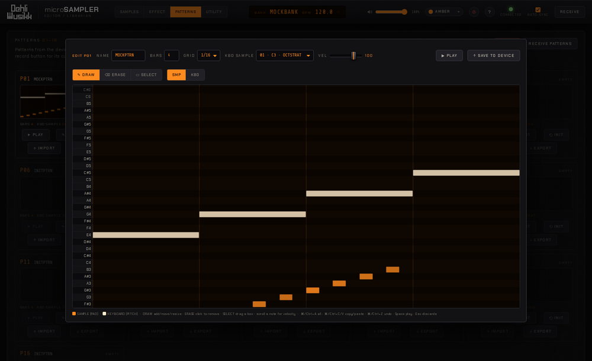
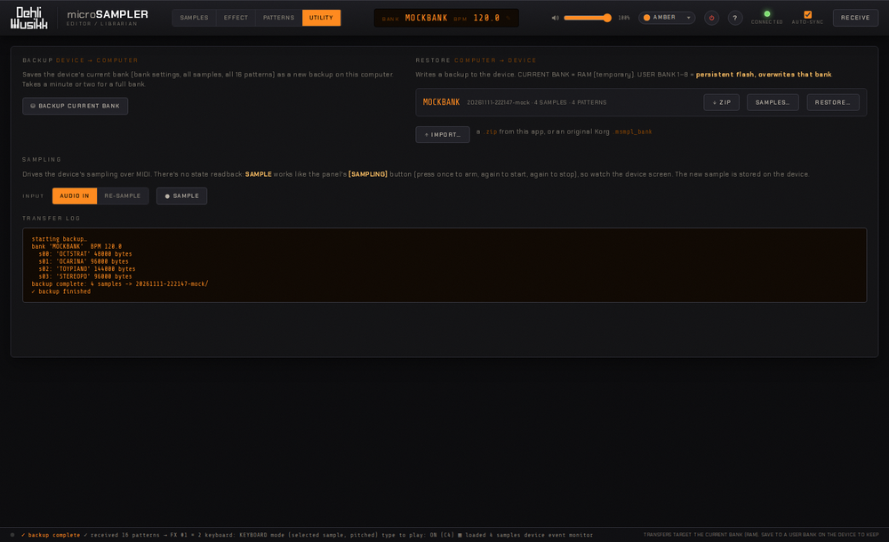
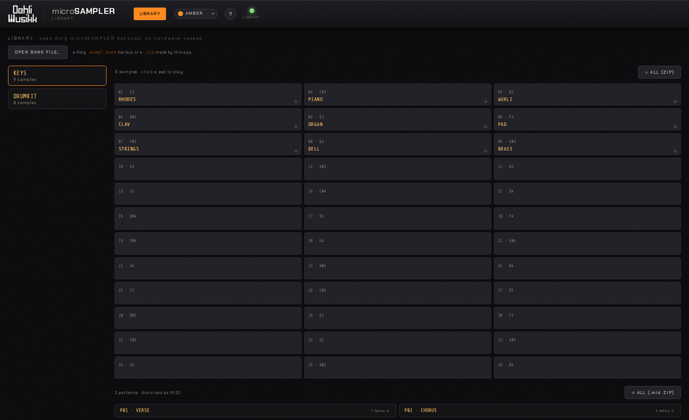

The guide
A tour of every view. New to the hardware? Read how the microSAMPLER works first. It explains what each parameter does on the hardware.
Samples

- 36-slot pad grid. Click a pad to edit it, and filter by name with the search box.
- Waveform. Scroll to zoom, drag to pan. Set the start/end points by dragging the S/E markers or by typing exact frame values. With ZERO-SNAP on, a dragged marker snaps to the nearest zero crossing so the trim doesn't click.
- Audition. The ▶ PLAY button plays the slot on the device (with a moving playhead over the waveform).
- Original BPM. Click the BPM chip to edit the sample's original tempo (used for BPM-sync stretching) in a dialog. Applying re-uploads the sample to the device, keeping its audio and all other settings.
- On-screen keyboard. A piano below the editor mirrors all 36 pads. Click a key to play it on the device. The SAMPLE / KEYBOARD toggle switches how the keys play: SAMPLE triggers a different sample per key (keys with no sample are dimmed), and KEYBOARD plays the currently selected sample across the keyboard, pitched. Tick TYPE TO PLAY to play from your computer keyboard too (the piano shows which key is which), with Z/X or the ◀ ▶ buttons to shift octave.
- MIDI IN. Tick it to play the device from a connected MIDI controller, with velocity, pitch bend and sustain pedal. Notes follow the SAMPLE / KEYBOARD toggle. MIDI IN uses your browser's Web MIDI, which Chrome, Edge and Firefox support.
- MIDI channel routing. With SMP CH / KBD CH next to MIDI IN, notes on the SMP channel always trigger pads and notes on the KBD channel always play the selected sample pitched, so a split controller can do both at once. Other channels, and the default (no channel), follow the SAMPLE / KEYBOARD toggle.
- MIDI Learn. Click LEARN (next to MIDI IN) or right-click a sample control. The control shows a LEARN badge. Move a knob or slider on your controller and the badge shows its CC number (PB for the pitch-bend wheel). A binding controls the pad that was selected when you learned it, even while you edit others, and each CC drives one control. While learning, right-click a control to clear its binding, and Esc stops learning. Binding CC#64 or the pitch-bend wheel replaces its sustain or bend function. Bindings are saved in the browser.
- Loop hold. Tick LOOP HOLD to latch notes: a pad ▶, piano key, typed key or MIDI note keeps sounding until you trigger it again. Unticking it, switching SAMPLE / KEYBOARD, Panic or a bank read releases everything held.
- Transfer. Download a slot as a WAV, or upload WAVs (auto-resampled to the device's 48/24/12/6 kHz). Drop several WAVs onto the pads to fill consecutive slots.
- Auto-slice. From the upload dialog's SLICE… button, chop one long sample across consecutive pads, either into equal pieces or at detected transients (ideal for drum breaks and loops).
- Audio tools on upload. Normalize, adjust gain, trim silence, fade in/out, and convert mono↔stereo, all processed in your browser before transfer.
- Live editing. Loop, reverse, BPM-sync, FX on/off, decay, release, level, pan, semitone, tune and velocity intensity, all written to the device as you change them.
- Slot management. Rename, clear (✕), and copy/swap by dragging one pad onto another.
- Memory meters. All samples are downloaded when you connect (a progress bar shows the count), so the readout is always exact and every waveform is instant.
- FOLLOW (toggle, on by default). The app's selection tracks the last sample triggered on the device, whether you play it by hand or a pattern triggers it, so editing keeps up with the hardware. Since samples are preloaded, the switch is instant. Turn it off if you'd rather the selection stay put while a pattern plays.

Effect

- All 22 effect types, each with its complete set of parameters. One effect runs per bank (see how effects work).
- Hover any parameter to see its range and default value.
- Two assignable knobs. The parameters mapped to the hardware's FX EDIT 1/2 knobs are badged FX1 / FX2 in the grid, and turning those knobs on the device is tracked live in the editor.
- Parameters gray out and swap exactly like the hardware does, depending on the current settings.
- Presets. Save the whole effect (type, knobs, parameters) to a file and load it back.
Patterns & editor

- RECEIVE PATTERNS reads all 16 patterns from the current bank.
- Play a pattern on the device (the ▶ on each recorded card), with a playhead sweeping its mini piano-roll.
- ✎ EDIT opens an in-app piano-roll editor over both the sample-mode (pad) and keyboard-mode (pitched) tracks. Switch between the Draw, Erase and Select tools (the cursor changes to match): draw, move and resize notes, drag to erase a run of them, or marquee-select several at once. It supports multi-select (Shift/⌘-click), undo/redo and copy/paste whose clipboard persists across patterns, so you can copy from one pattern and paste into another. Per-note velocity shows as note brightness, the arrow keys nudge or resize, and Space plays the pattern on the device with a playhead sweeping the roll. Set the bar count, grid snap and the keyboard track's sample, then Save to Device (clicking outside the dialog saves and closes). Works on an empty slot too, so you can build a pattern from scratch.
- ● REC presses the device's record button over MIDI (arm → start → end) to record into its current pattern.
- Import / export MIDI. Export any pattern as a Standard MIDI File, or import one.

The device must have GLOBAL → MIDI CLK = AUTO (or EXT MIDI) so its sequencer follows the editor. See device setup. Record is fire-and-forget, so watch the device screen as it steps through arm → record → end.
Utility

- Bank backup & restore. Save the current bank to your computer and restore it later, to the current (RAM) bank or to one of the device's persistent user banks. Backups can be exported/imported as ZIP files.
-
Banks from Korg's original editor. IMPORT… also takes a
.msmpl_bankfile. It joins the backup list, and RESTORE… writes the whole bank to the device: samples, their settings, the effect and the patterns. - Cherry-pick restore. From a backup's SAMPLES… button, copy a single sample into any pad of the current bank, without restoring the whole bank.
- Remote sampling. Choose the input source (AUDIO IN / RE-SAMPLE) and press SAMPLE to drive the device's sampling over MIDI. It mirrors the panel button (arm → sample → end), so watch the device screen.
Library mode (no hardware)

You don't need a microSAMPLER to browse and extract the contents of bank backups. This is useful for recovering audio and patterns
from old backups saved by Korg's original editor. The easiest way in is the microSAMPLER Library app (download). It needs no special permissions since library mode never touches USB. Using the classic ZIP instead, double-click the
microSAMPLER Library launcher in your platform's folder, or start the bridge in library mode by hand:
python3 native-tools/bridge.py --libraryIt serves on http://localhost:8766, a separate port from the device bridge's 8765, so the two never clash.
-
Open a bank file. In the LIBRARY view, OPEN BANK FILE… imports a Korg
.msmpl_bankbackup or a.zipbackup made by this app. - Browse & play. Each imported bank shows its 36 pads. Click a pad to play that sample in the browser.
- Export samples. Download any sample as a WAV, or grab the whole bank as a ZIP of WAVs. Device-only features are hidden while in library mode.
-
Export patterns. Any recorded patterns appear below the pads. Download each as a MIDI file, or all of them as a
.midZIP, ready to drop into your DAW.
Prefer the command line?
python3 native-tools/msmpl_bank.py extract "bank.msmpl_bank" writes all the samples to WAVs (and any patterns to
.bin blobs) without opening the app.
Top bar & shortcuts
- Bank name & BPM. Click the bank display to edit them.
- Master volume. The slider sets the device's overall output level.
- Panic (⏻). All-sound-off / stop, if a note ever sticks.
- Theme. 12 accent colours from a swatch dropdown, and the whole interface recolours.
- RECEIVE. Re-read the bank from the device.
- AUTO-SYNC (on by default). Re-reads the bank when you return to the window, to pick up hardware edits. A bank read stops a playing pattern and releases held notes. Untick it to keep them going, and press RECEIVE yourself after editing on the device.
- ?. The in-app help overlay.
| Shortcut | Action |
|---|---|
| ← → ↑ ↓ | Move between pads |
| Space | Audition the selected pad |
| + / − / 0 | Waveform zoom in / out / fit |
| R | Receive bank from device |
| Ctrl/⌘ + Z | Undo a parameter edit |
| Ctrl/⌘ + ⇧ + Z (or Ctrl/⌘ + Y) | Redo |
| Z / X | On-screen keyboard: octave down / up (when "type to play" is on) |
| Space | Pattern editor: play / stop the pattern on the device |
| Del | Pattern editor: delete the selected note(s) |
| Ctrl/⌘ + A / C / V | Pattern editor: select all / copy / paste notes |
| Arrow keys (⇧ + arrows) | Pattern editor: move the focused note (resize it) |
| Esc | Stop MIDI learn. In the pattern editor: discard changes and close |
| ? | Help overlay |